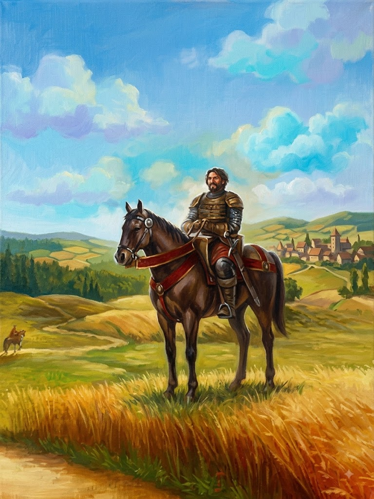
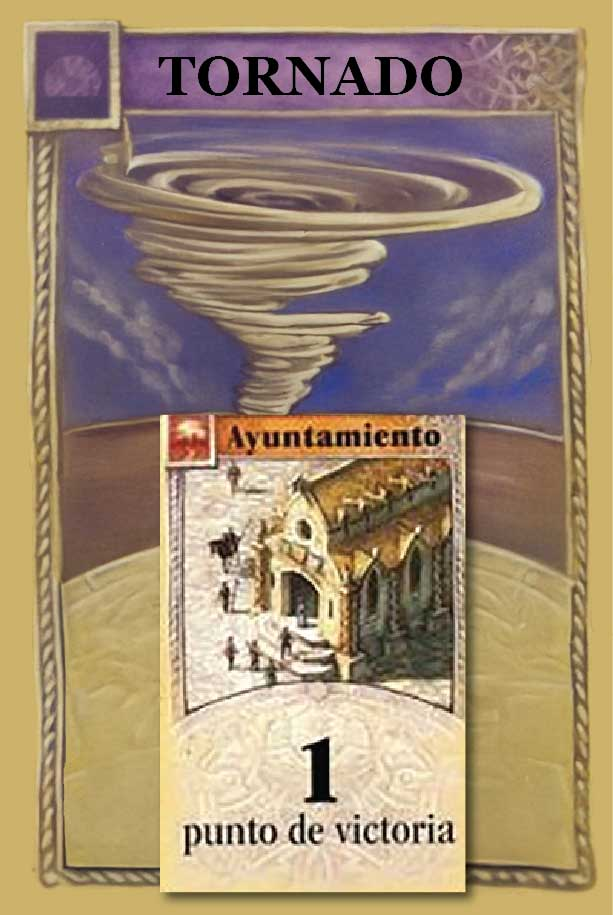
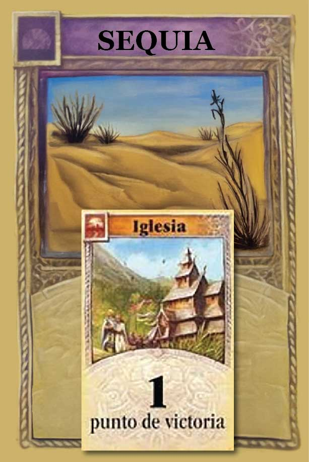
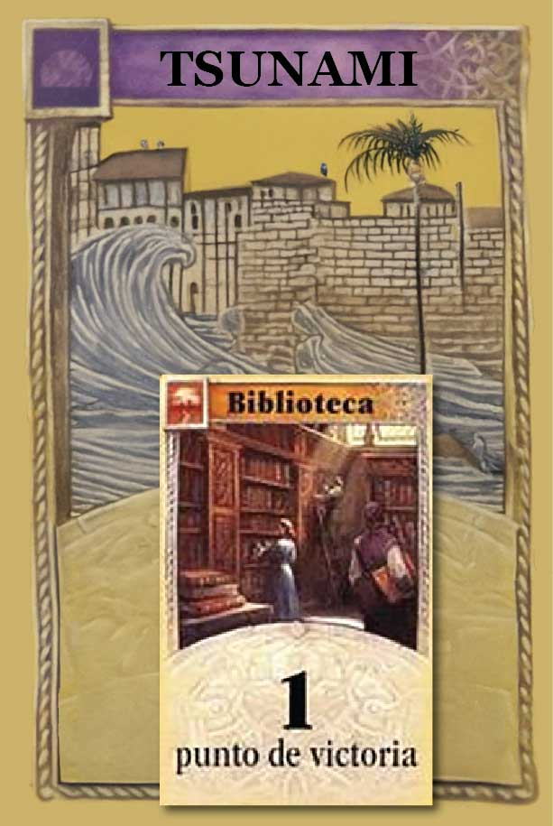
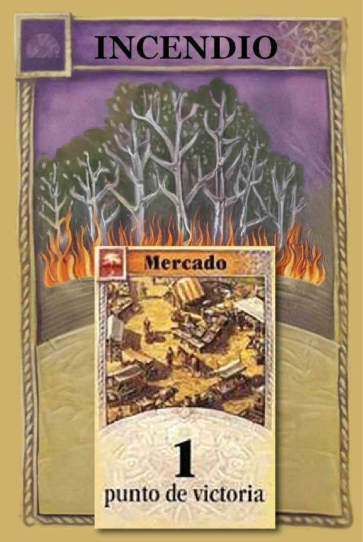
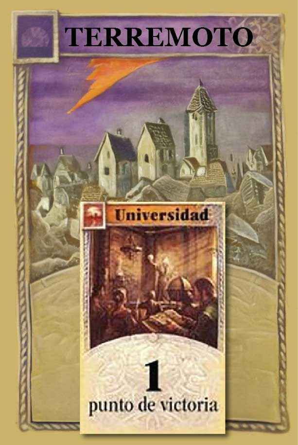

Compendio de variantes
Elegí tus reglas
Tocá una regla para leerla completa, o sumala directo con el botón +. Podés jugarlas por separado, combinando las que quieras.
Tu selección
Catanazo
Las reglas que sumaste para esta partida, de menor a mayor impacto. Usá los sellos de la derecha para saltar directo a cada una.
Ajustes
Configuración
¿Cómo instalo la app?
En iPhone (Safari)
- Tocá el botón de compartir en la barra inferior.
- Elegí "Agregar a pantalla de inicio".
- Confirmá el nombre y tocá "Agregar".
En Android (Chrome)
- Tocá el menú arriba a la derecha.
- Elegí "Instalar app" o "Agregar a pantalla de inicio".
- Confirmá tocando "Instalar".
Una vez instalada, el ícono queda en tu pantalla de inicio como cualquier otra app, sin necesidad de abrir el navegador.
¿Ideas o comentarios sobre las reglas?
Escribime.
Regla simple
2 y 12
Si el resultado de los dados es 2 o 12, ambos números producen recursos. Estos números son equivalentes en valor para efectos del juego.
Extorsionando al ladrón
Soborno al ladrón
Mover al ladrón
Si el ladrón está bloqueando uno de tus números, durante la etapa de construcción podés pagar 2 recursos equivalentes al hexágono obstruido, para moverlo a un hexágono adyacente al que ocupa.
Al moverlo de esta manera, no podés robar recursos de los jugadores que ocupen el nuevo hexágono, como lo harías con un 7.
Cierre de partida
Ronda de cierre
Cuando un jugador alcanza los 10 puntos de victoria, la partida no termina en el acto: todos los demás jugadores completan un turno más antes de declarar ganador.
Si más de un jugador llega a 10 puntos o más durante esta ronda final, gana quien tenga más puntos de victoria. Si el empate persiste, gana quien lo haya alcanzado primero en el orden de turno.
Regla simple
Dados dobles
Si el resultado de los dados es doble (1-1, 2-2, 3-3, 4-4, 5-5 o 6-6), se resuelve esa producción con normalidad y se tira de nuevo de inmediato, sumando el resultado nuevo aparte.
Si la segunda tirada también resulta en un 7, se resuelve como cualquier 7 antes de continuar el turno.
Puntuación final
Maestro de puertos
Al final de la partida, el jugador con asentamientos en la mayor variedad de tipos de puerto distintos recibe 1 punto de victoria extra.
- Se cuenta variedad de tipos de puerto (por ejemplo: 2:1 madera, 2:1 trigo, 3:1 genérico), no la cantidad total de puertos.
- En caso de empate en la cantidad de tipos distintos, ningún jugador recibe el punto.
Construcción
Ciudad exprés
Al construir un poblado nuevo, podés descartar una carta de desarrollo de Punto de Victoria sin revelarla y subirlo directo a ciudad, sin pagar el costo normal de ciudad.
Esto reemplaza el pago de la ciudad; el poblado igual debe pagarse con normalidad al construirse primero.
El reino decide
Consecuencias del 7
Al sacar un 7, además de mover el ladrón con normalidad, se puede robar una carta del mazo del reino para ver qué sucede este turno. El ladrón se mueve igual, salvo que la carta indique lo contrario.
Carta del reino
Tocá el sello para tirar el 7.
El mazo se agotó — se barajó de nuevo.
Seis pueblos, seis caminos
Civilizaciones
Existen 6 civilizaciones distintas, con 3 tipos distintos de construcción. Cada una posee dos habilidades: una pasiva y otra activa.
Efecto que está siempre activo durante toda la partida, sin necesidad de declararlo ni gastar nada para usarlo. Se aplica automáticamente cuando se cumple su condición.
Efecto que se dispara únicamente cuando el jugador de esa civilización obtiene un 7. No es automática: el jugador decide si la usa y en qué orden respecto a robar la carta.
Cada jugador lanza un dado para saber qué civilización utilizará. Si el número ya salió, se vuelve a lanzar.
Asedio a otro jugador
Asedio y defensa

Asediando al enemigo
- Si tenés un camino, poblado o ciudad adyacente a una ficha de otro jugador, podés declarar un asedio sobre ella como última acción de tu turno.
- Costo: 1 carta de Caballero + los mismos recursos que se usaron para construir esa ficha. El Caballero sigue la regla estándar de cartas de desarrollo: si lo comprás este turno, recién podés jugarlo en tu próximo turno.
- No hay límite de cantidad de asedios por turno, siempre que tengas fichas rivales adyacentes y los recursos para pagarlos.
- Un jugador con 7 o más puntos de victoria a la vista no puede declarar ningún asedio (aunque sí puede ser objetivo de uno).
- Solo puede haber un asedio activo por ficha a la vez.
- La ficha asediada se marca con una ficha de asedio y no produce recursos mientras dure, sin importar si sale su número en el dado.
| Ficha | Costo atacar | Costo defender |
|---|---|---|
| Camino | 1 Caballero ⚔️ + 2 recursos 🚥 | 1 Caballero ⚔️ |
| Poblado | 1 Caballero ⚔️ + 4 recursos 🛖 | 1 Caballero ⚔️ + 1 Arcilla 🧱 |
| Ciudad | 1 Caballero ⚔️ + 5 recursos 🏯 | 1 Caballero ⚔️ + 2 Piedras 🪨🪨 |
Defensa del asedio
Solo el jugador atacado puede resistir, como última acción de su turno, pagando el costo de defensa correspondiente. Si paga, retira la ficha de asedio y la pieza sigue en pie con normalidad.
Resolución
Si el asedio no fue defendido, se resuelve al comienzo de la vuelta siguiente del atacante (una vuelta completa de la mesa), justo antes de tirar los dados. Un poblado o camino destruido vuelve a la mano del jugador; una ciudad se degrada a poblado y se devuelve.
La ficha sigue valiendo puntos mientras siga en el tablero. La carta de Caballero utilizada no afecta al ladrón.
Carta de catástrofe + 1 PV
Catástrofes
Cinco cartas especiales mezcladas entre las cartas de desarrollo. Cada una afecta al azar a un grupo de hexágonos del tablero: algunas reordenan sus números, otras los dejan sin producir por un tiempo.

Tornado Ayuntamiento
Todos los números se barajan y se colocan de manera aleatoria sobre los hexágonos.

Sequía Iglesia
Los números con ovejas se voltean y no producen recursos hasta que vuelva a ser el turno del jugador que jugó la carta.

Tsunami Biblioteca
Los números con ciudades costeras se barajan y se colocan de manera aleatoria sobre los hexágonos.

Incendio Mercado
Los números con trigos y maderas se voltean y no producen recursos hasta que vuelva a ser el turno del jugador que jugó la carta.

Terremoto Universidad
Los números con piedras y barros se barajan y se colocan de manera aleatoria sobre los hexágonos.
Reglas generales
- Todas las cartas de catástrofe devuelven el ladrón al desierto.
- Las cartas de Catástrofe se encuentran entre las cartas de desarrollo: son las cartas de 1 punto de victoria (se puede escribir, pegar o imprimir el nombre de la catástrofe sobre el diseño de esa carta).
- Si un jugador compra 2 o más CDD en el mismo turno y obtiene dos o más cartas de Catástrofe, se resuelven en el orden de compra.
Si un jugador obtiene esta carta, debe revelarla inmediatamente. Si lo hace, sigue valiendo 1 PV; si no la revela, el punto es inválido.